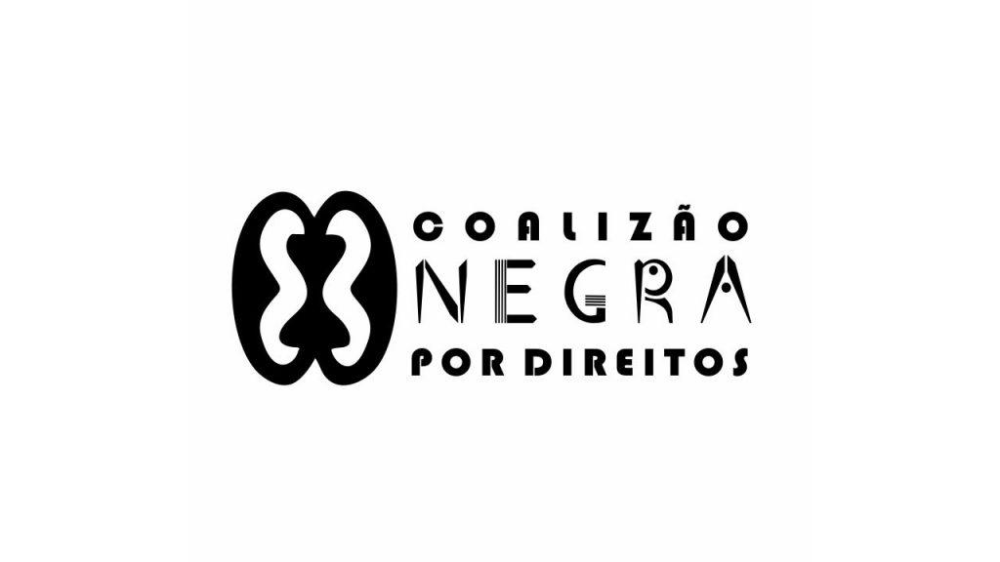

Livros
- "Pequeno Manual Antirracista" – Djamila Ribeiro
- "Tornar-se Negro" – Neusa Santos
- "Quarto de Despejo" – Carolina Maria de Jesus
Documentários
- "AmarElo – É Tudo Pra Ontem"
- "Menino 23"
Sites e Projetos
- ONU – Direitos Humanos
- Coalizão Negra por Direitos
